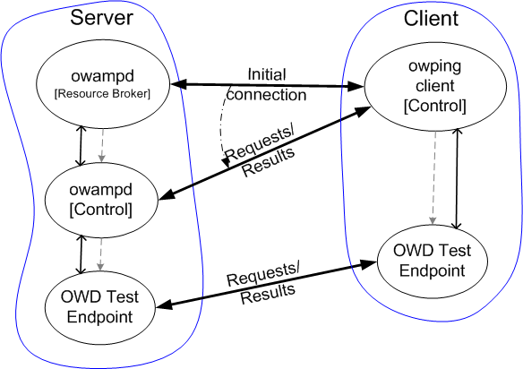

OWAMP Details
$Date$

Architecture
OWAMP is a typical client-server application. The owping client
contacts the owampd daemon on the peer host to request a specific
test. That request includes an indication of the complete send schedule
as well as parameters to indicate packet characteristics. owampd
is responsible for accepting or denying the request.
owampd has been developed as a classic accept/fork daemon. The
master daemon process listens for new network connections and also manages
the resources for all child owampd processes. Once a connection
comes in, owampd forks a child process to handle that request. The
child process deals with all encryption and communication issues with the
client, as well as dealing with all static resource limits. Static
resource limits are those not dependent upon what is currently happening
on the node. For example, the request broker can easily determine
if the given client is allowed to do open mode (unauthenticated) tests
without talking to the master daemon. Once the request broker
process determines the request is valid, it makes a request to the master
daemon for the resources and time period requested by the client. If
the master daemon has the resources available it grants the request.
Once a given test session is accepted, the client and server both fork
off OWD Test Endpoint children to run that test. A single control
connection can spawn off any number of test sessions. However, once pending
test sessions are started by the start session message all sessions
must be completed before more sessions can be requested using the same
control connection. Additionally, the test sessions need to be completed
before data can be retrieved using the same control connection. Of course,
the client could open another control connection to the peer to start additional
sessions, or to request intermediate results from any of the active sessions.
Test Endpoints
The OWD Test Endpoint processes are implemented using identical
code on both the server and the client. The OWD Test Endpoint processes
send and receive packets according to the agreed upon schedule. When the
test sessions are complete, which will be timeout after the last
packet is sent, the OWD Test Endpoint processes exit and return
the exit status of the test to the Control parent process. The client
can then fetch the results for send test sessions. That data will
be buffered on the server. (The client will already have the results for
receive
sessions since the packets are received on the client.) The server can
be configured to delete the buffered data when the control connection is
closed, or when the data is fetched the first time, or it can be buffered
indefinitely and cleaned by an external process.
Philosophy
OWAMP was written completely as a user space application. This has advantages
and disadvantages. On the positive side, there are no kernel modifications
required to run OWAMP and it should be very easy to port to anything remotely
unix-like. On the negative side, this adds the possibility of two context
switches between the actual receipt of a packet and the fetching of a timestamp.
(I am currently looking at ways to reduce this for architectures that have
a clock register available so that timestamp fetching can be done without
a system call.) It is entirely possible to increase the accuracy of OWAMP
by writing custom kernel modules that do some of the OWAMP functionality
in the kernel instead of in "user space". If the OWAMP protocol
becomes popular this will make more sense.
A matter of time...
By far the most difficult part of OWAMP is dealing with clock offsets from
UTC. OWAMP needs to be able to get timestamps as well as error estimates
for those timestamps. Currently OWAMP depends upon NTP and regular UNIX
system calls to get timestamps. Benchmarks have shown that there is a considerable
amount of jitter involved with fetching timestamp values from typical UNIX
kernels using system calls. The distribution is similar to that of network
latencies. This means that most measurements will be very accurate and
good, but every once in a while you will get very unlucky and your clock
reading will be very far off. Additionally, if NTP is not configured in
a way to provide very stable offset estimates, the timestamp jitter can
be even worse. (See the next section.)
NTP Configuration
To have the most meaningful data, NTP is required train the system clock.
NTP does this by determining the local clock offsets from other NTP trained
clocks (or locally connected
hardware clocks). NTP continually modifies the clock rate on the local
system in an attempt to bound the local clock offset from UTC. UTC is estimated
by the peer clocks. (There are sanity checks, and only "true tickers" are
used in the estimate.) Because OWAMP fetches the local time from the system
clock and the current UTC offset and error estimate from local NTP it is
important to understand some of the limitations of this model.
-
NTP will be constantly changing the clock rate on both the sending system
and the receiving system. Therefore you are likely to see skew in the
measurements if you look at them at very fine resolutions.
-
NTP peer clocks sometime become unavailable. When this happens, the current
offset estimate from UTC is likely to jump. OWAMP currently uses the NTP
computed offset in addition to the local system clock to determine timestamps.
This has the very undesirable side effect of creating a usually very accurate
but sometimes very jumpy clock. Future versions of OWAMP will address this
problem.
To minimize these effects it is important that NTP be configured in a more
methodical way on systems using OWAMP:
-
NTP must be configured with at lest 4 peers.
-
The "prefer" keyword should probably not be used unless it is being used
to configure a PPS system peer. (Or at least a peer that you are VERY confident
you will not be loosing connectivity to.) If the prefer keyword is
used, the offset of that preferred clock is used instead of a weighted
average of all the peer clocks that survive the clock combining algorithm.
If that peer is stable and accurate, then this works very well. However,
if that peer becomes unavailable for some reason, then NTP will re-compute
the local clock offset to UTC and OWAMP will most likely see a rather large
jump in the offset. If the prefer keyword is not used and a peer clock
becomes unavailable, then the change in offset is usually not so pronounced
since it is a weighted average of all the clocks, and not just the peer
clock. (On the other hand, if you notice a large amount of "clock hopping"
it might be worth assigning a preferred peer - at least if there is a very
stable, very available peer clock to use.)
Additionally, it is probably a very good idea to make sure you allow other
hosts to query the ntpd process on the host where owampd is running. This
will allow test partners to see how NTP is configured on test peer systems
and allow for quicker diagnosis of problems. This is done using the "restrict"
keyword. A typical configuration for this might look like:
# allow anyone to query
restrict default nomodify
# allow localhost to more fully interact
restrict 127.0.0.1
More details on configuring NTP can be found at
http://support.ntp.org/bin/view/Support/SelectingOffsiteNTPServers
Understanding the Data
Latency distributions in general have a heavy tail. In other words, the
vast majority of latency measurements will be "close" to the minimum but
there will be a few very unlucky packets that are delayed by relatively
large amounts. This artifact is exacerbated by the jitter involved with
fetching a timestamp from the UNIX kernel. It is important to keep this
in mind when looking at data results from OWAMP. Specifically, typical
aggregation functions such as mean and standard deviation have very little
meaning for this data. A single badly delayed packet, or bad timestamp
will change the mean by a relatively large amount. More resilient aggregation
functions such as median are recommended.
$Id$